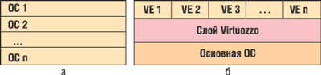
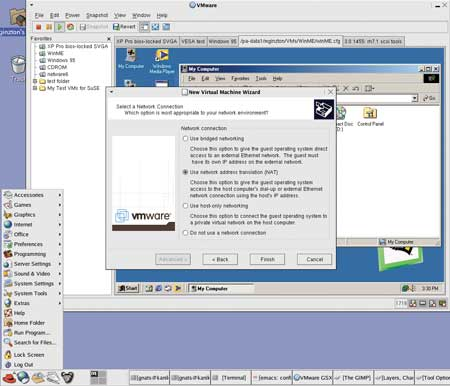
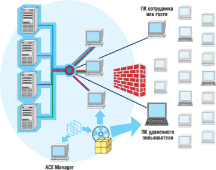
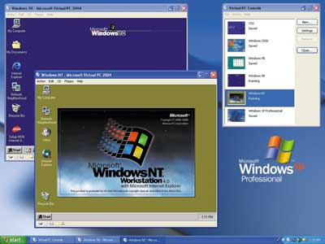
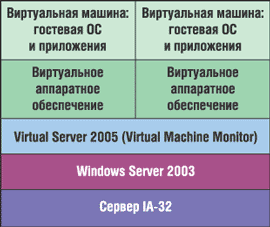
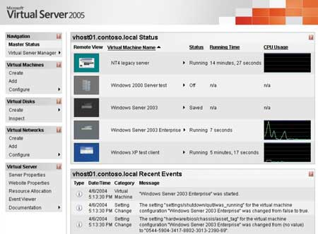

Андрей Колесов
Концепцию виртуальных машин (VM) впервые реализовала еще в 70-е годы прошлого столетия корпорация IBM на своих мэйнфреймах System 360/370. Тогда появление этой технологии было связано в основном с необходимостью поддержки различных версий ОС (в том числе устаревших на тот момент) в системах коллективного пользования. Казалось бы, прогресс в области аппаратных средств сделал эту проблему неактуальной: гораздо проще пользоваться подходом "каждому экземпляру OC - по выделенному компьютеру". Однако на рубеже веков обнаружилось, что одной из заметных движущих сил развития ИТ стал рост заинтересованности заказчиков в использовании VM-технологий - причем, как ни странно, именно для персональных ПК (здесь имеется в виду только платформа Intel).
От рабочих станций к серверам
Поначалу объяснение такого интереса к виртуализации было очень простым - ведь одновременно с увеличением числа версий клиентских ОС постоянно расширялся и круг людей (разработчиков ПО, тестеров, специалистов по технической поддержке, экспертов по софту), которым, в силу специфики их профессии, требуется на рабочей станции сразу несколько копий различных ОС. Именно имея в виду эту область применения, с начала 90-х годов сразу несколько компаний приступили к продвижению собственных продуктов, используемых при создании виртуальных машин для персональных ПК. Лидирующее положение среди них занимает VMware (http://www.vmware.com) со своим продуктом VMware Workstation.
Но в последние три-четыре года началось активное освоение VM-технологиями серверных платформ, что позволяет решать задачи обеспечения работоспособности унаследованных приложений, поддержки неоднородных вычислительных сред и оптимизации используемого оборудования (программная консолидация и виртуализация серверов). Та же компания VMware еще в 2001 г. представила свои серверные продукты GSX Server и ESX Server и фактически приступила к формированию полномасштабной виртуальной софтверной платформы.
И все же, если перефразировать известную поговорку, "один в поле - еще не показатель перспективности этого поля". Есть очень простой показатель перспективности той или иной технологии: решающий перелом в истории любых технологий наступает в тот момент, когда в борьбу между специализированными инновационными компаниями вмешиваются ведущие ИТ-поставщики. На поле VM-технологий для аппаратной платформы Intel такой критический момент наступил в 2003 г.: в марте на этот рынок вышла корпорация Microsoft (http://www.microsoft.com).
Microsoft двинулась в этом направлении по традиционному пути, купив у компании Connectix (работавшей в области виртуальных технологий для ПК с 1988 г. и занимавшей здесь вторую позицию после VMware) ее технологию виртуальных машин для платформ Windows и Macintosh и приняв на работу ключевых сотрудников команды разработчиков. В августе 2003 г. Connectix полностью переключилась на выпуск виртуальных игровых станций для PC и Mac и прекратила поставки продуктов Virtual PC for Windows 5.2 и Virtual PC for Mac 6.0, полностью перешедших в ведение Microsoft. В самом конце 2003 г. корпорация выпустила продукт Microsoft Virtual PC 2004, который сменил прежний вариант Virtual PC for Windows, а в начале осени 2004 г. представила рынку серверное решение Microsoft Virtual Server 2005.
Появление такого игрока, как Microsoft, неминуемо должно было повлиять на расстановку сил на рынке виртуального ПО. Поэтому ничуть не удивительно, что в декабре 2003 г. VMware была куплена производителем систем хранения корпорацией EMC (http://www.emc.com); с тех пор она, став подразделением EMC, продолжает работать под собственной торговой маркой. Отметим, что EMC - не только одна из крупнейших компьютерных фирм мира (около 5,5 млрд долл. годового дохода), но и поставщик в первую очередь аппаратных средств.
В 2004 г. о своем намерении вплотную заняться поддержкой виртуальных технологий объявила и Intel. А на прошедшей в марте нынешнего года в Сан-Франциско конференции Intel Developers Forum корпорация представила прототип своей Virtualization Technology (ранее известной под кодовым названием Vanderpool Technology) на примере продуктов VMware, оптимизированных для этой платформы. Одновременно Intel и VMware объявили о широкомасштабном сотрудничестве в данной области, включая маркетинговые усилия, в том числе совместное проведение мероприятий, создание центров компетенции и обучение партнеров и заказчиков.
Почти одновременно партнерский договор с VMware заключила и IBM (http://www.ibm.com); он предусматривает поставки ознакомительных версий виртуализационной софтверной инфраструктуры в составе серверов eServer BladeCenter.
Процесс софтверной виртуализации пошел…
Преимущества и сценарии применения
Технология виртуализации реализует возможность исполнения нескольких ОС на одном и том же процессоре. Однако в этом определении нужно сделать одно уточнение, выделив два основных направления реализации виртуальных технологий (рис. 1). Традиционный подход заключается в поддержке работы ОС разных типов (именно на такие задачи ориентированы решения VMware и Microsoft). Другой, появившийся относительно недавно, вариант ориентируется на оптимизацию управления вычислительными ресурсами на базе моносистем. Именно его воплощает еще один заметный игрок на этом рынке, российская компания SWsoft (http://www.swsoft.ru). Ключевая идея ее базовой технологии Virtuozzo состоит в том, чтобы создать набор уникальных сред на основе одной копии ОС. Такой подход обеспечивает более эффективное использование ресурсов компьютера (одно ядро ОС для всех пользователей) и не требует эмуляции аппаратных средств, так что накладные расходы при этом не превышают нескольких процентов. Именно потому данный подход часто называют Virtual Environment (VE) - в отличие от Virtual Machine.
|  |
| Рис. 1. Два подхода к реализации виртуальных технологий: Virtual Machine (а) и Virtual Environment (б).
|
Казалось бы, зачем нужны виртуальные среды, когда ОС сама по себе обеспечивает многозадачность и многопоточность, а различные серверные приложения - многопользовательский режим? Ответ заключается в том, что VE предоставляет существенно большие возможности настройки среды под требования конкретного пользователя (т. е. обеспечивает высокую производительность при решении задач) и, что еще важнее, - значительно более высокий уровень безопасности и надежности функционирования.
Каждая VE обладает собственным набором уникальных параметров (IP-адреса, порты, правила фильтрации, таблицы маршрутизации и т. п.), которыми можно управлять без перезагрузки ОС. Пользователи могут устанавливать приложения или изменять конфигурационные файлы без ущерба для других VE. В то же время администратор может выполнять операции над ядром ОС для тысяч VE одновременно, свободно перемещая отдельные VE между физическими серверами. Применение подобных технологий особенно востребовано в быстрорастущем сегменте хостинг-провайдеров.
Более подробно технология Virtuozzo рассматривается в статье "Виртуализационные технологии и возможности их использования", опубликованной в этом же номере журнала (см. также "Virtuozzo: решение для серверной консолидации", "BYTE/Россия" № 12'2003). А здесь мы будем говорить о традиционном подходе, ориентированном на поддержку одновременной работы разнородных ОС.
В целом можно выделить несколько основных сценариев применения VM, охарактеризованных ниже.
Консолидация для разработки и тестирования ПО. Разработчики ПО, используя VM, будут иметь гарантию, что фатальные ошибки при отладке приложений не приведут к зависанию других приложений. Кроме того, это позволит им быстро создавать различные конфигурации ОС и тестировать программы, спроектированные для разных ОС. Индивидуальные разработчики могут развертывать на отдельном компьютере распределенные приложения, а специалисты служб технической поддержки - оперативно моделировать ситуации, возникающие у пользователей различных ОС.
Поддержка и миграция унаследованных приложений. Чаще всего эта задача возникает при замене оборудования, когда используемое в организациях ПО нужно переносить на новые серверы, работающие под управлением современных ОС. Поставщики предоставляют специальные инструменты, упрощающие перенос приложений с физических машин на виртуальные.
Демонстрации и изучение нового ПО. Эксперты, изучающие новые продукты (особенно в их бета- или ознакомительных версиях), могут не опасаться того, что их установка и последующее удаление повлияют на работоспособность основной системы и приведут к заполнению внешней памяти информационным мусором.
Консолидация серверов. Это наиболее динамично развивающаяся область применения VM-технологий, направленная на повышение эффективности использования ИТ-ресурсов. Выигрыш здесь создается за счет как экономии аппаратуры, так и снижения затрат на администрирование систем. Подобный вариант часто применяется в случае параллельной работы нескольких экземпляров одной и той же ОС, когда каждая VM выполняет отдельную функцию (почтовый сервер, сервер базы данных и т. п.) или обслуживает разные группы пользователей.
В то же время виртуализация - это лишь одна из технологий, позволяющих проводить консолидацию приложений и миграцию. В дополнение к виртуализации компании могут использовать и другие подходы (см. таблицу) - например, управление рабочими нагрузками (workload management) или изоляцию оборудования (hardware isolation) - для снижения затрат на управление своими серверами. Стратегия корпорации Microsoft заключается в предоставлении им всего спектра технологий, учитывающих разные типы рабочих нагрузок и виды приложений.
Сильные и слабые стороны разных подходов к консолидации и миграции приложений
| Подход | Сильные стороны | Слабые стороны |
| Виртуализация | Простота консолидации приложений и миграции | Сложность управления (число экземпляров ОС не уменьшается) ПО виртуальной машины и ОС имеют общую точку отказа |
| Управление нагрузками | Низкие издержки Более простое управление (только один экземпляр ОС) |
Все приложения должны выполняться на одном и том же уровне ОС ОС представляет собой общую точку отказа |
| Использование разделов/изоляция оборудования | Отсутствие издержек Полная изоляция приложений Кластеризация разделов, обеспечивающая высокую доступность |
Низкая избирательность при разбиении на разделы (минимум 4 процессора
на раздел) Изменение размера раздела требует перезагрузки |
Здесь следует подчеркнуть другой очень важный момент: в общем случае использование VM не приводит к снижению затрат на приобретение ПО. Ведь поставщик предоставляет только движок виртуальной машины, а сами ОС (основные и гостевые) нужно приобретать отдельно, и правила их использования определяются производителем этих систем. Например, даже при установке нескольких копий одной и той же Windows на один компьютер, как правило, нужно покупать столько же лицензий. Экономия же достигается за счет уменьшения количества оборудования, меньших усилий на установку и администрирование, что, в свою очередь, делает работу более удобной.
Столь же очевидно, что виртуальная машина всегда будет более ресурсоемкой и менее быстродействующей, чем автономная ОС. Нужно иметь в виду и то, что одновременная работа разнородных ОС ведет к снижению производительности и эффективности использования ресурсов. Соответственно в зависимости от того, какие задачи ставят перед собой разработчики VM, выбирается тот или иной технологический подход.
Виртуальная инфраструктура VMware
Компания VMware - ведущий сегодня поставщик виртуальных софтверных технологий для аппаратной платформы Intel, хотя создана она не так давно, в 1998 г. Но ее первый продукт VMware Workstation для рабочих станций, выпущенный в 1999 г., быстро завоевал популярность, а спустя два года появились серверные системы VMware GSX Server и ESX Server. В 2003 г. компания представила свой виртуальный VMware VirtualCenter, реализованный на базе технологии VMotion, а в прошлом году выпустила еще одно решение для корпоративных настольных ПК - VMware ACE.
VMware Workstation сейчас представлена на рынке версией 4.5 (рис. 2). Но в начале 2005 г. компания приступила к бета-тестированию варианта 5.0, в котором можно выделить следующие основные новые возможности:
- улучшено управление копиями текущих экземпляров (snapshot) виртуальных машин;
- поддержка многоузловых конфигураций позволяет командам специалистов работать в режиме взаимодействия нескольких виртуальных машин;
- реализованы новые возможности клонирования виртуальных машин;
- расширен список хостовых и гостевых ОС (новые версии Windows и Linux), обеспечена поддержка как 32-, так и 64-разрядных аппаратных платформ;
- поддерживаются новые категории USB-устройств (Web-камеры, микрофоны и т. д.);
- есть возможность записи и воспроизведения действий пользователя виртуальных машин;
- улучшен интерфейс для Linux;
- добавлен инструмент VMware Virtual Machine Importer для преобразования виртуальных машин из формата Microsoft в VMware;
- повышена производительность системы, особенно в сетевом режиме.
|  |
| Рис. 2. Создание виртуальных машин средствами VMware Workstation.
|
Выпущенный год назад новый продукт VMware ACE (Assured Computing Environment) предназначен для управления корпоративными настольными ПК. Используя технологию Virtual Rights Management, ИТ-менеджеры могут унифицировать процесс распространения ИТ-политик предприятия на компьютеры пользователей. Ключевой инструмент в этом решении - VMware ACE Manager, с помощью которого создают проекты (виртуальные машины, приложения или наборы политик), передаваемые затем пользователям через сеть или на компакт-дисках (рис. 3).
|  |
| Рис. 3. VMware ACE упрощает управление корпоративным парком ПК.
|
Серверные решения VMware представлены двумя вариантами - GSX Server 3.1 для создания среды уровня отдела и коллективов разработчиков, занимающихся написанием и тестированием ПО, и ESX Server 2.5, реализующим технологию виртуальных машин для центров обработки данных. Они построены на двух разных технологических принципах: GSX Server устанавливается поверх основной ОС и распределяет реальные компьютеры для гостевых ОС, а ESX Server создает в аппаратных системах логические вычислительные пулы напрямую, что обеспечивает более высокую производительность, хотя и отрицательно сказывается на гибкости управления.
Создание центров обработки - это относительно новое направление применения виртуальных технологий, которое мы здесь детально не будем рассматривать. Скажем только, что у VMware есть еще два продукта: VMware Virtual SMP - дополнительный модуль для VMware ESX Server, который позволяет запускать одну виртуальную машину на нескольких физических процессорах, и VMware VirtualCenter - инструмент для управления крупной разнородной виртуальной инфраструктурой.
Подробнее мы остановимся на более массовом решении - VMware GSX Server 3.1. Он выпускается в двух лицензионных вариантах: первый предназначен для систем на базе одного или двух процессоров (стоимость 1400 долл.), второй - до 32 процессоров (2800 долл.). В отличие от ESX, сервер GSX не поддерживает SMP (симметричную многопроцессорную обработку) для гостевых ОС, но при этом позволяет запускать до 64 виртуальных машин. GSX Server поддерживает до 64 Гбайт оперативной памяти, однако для одной VM выделяется не более 3,6 Гбайт.
Система официально работает только с 32-разрядными ОС, но VMware обещает реализовать поддержку 64-разрядных систем после того, как Microsoft выпустит Windows 2003 for 64-bit Extended Systems (это должно произойти в текущем году).
GSX Server позволяет применять в качестве основных и гостевых чрезвычайно широкий спектр ОС (различные версии Windows, NetWare, Linux, FreeBSD, а также Sun Solaris 9). Локальное управление сервером выполняется с помощью Virtual Machine Console. Можно также создавать скрипты с помощью vmPerl и vmCOM API.
Виртуальные технологии Microsoft
В самом конце 2003 г. корпорация Microsoft выпустила свой первый VM-продукт - решение для рабочих станций Microsoft Virtual PC 2004, пришедшее на смену прежнему варианту Virtual PC for Windows. В новом пакете в качестве основных ОС могут применяться Windows 2000 Professional или Windows XP, а в качестве гостевых - большинство x86-совместимых ОС, в том числе MS-DOS и все версии Windows, начиная с 1.0, IBM OS/2, Linux, Novell NetWare (рис. 4).
|  |
| Рис. 4. Microsoft Virtual PC 2004: в среде Windows XP запущены две гостевые ОС - Windows NT 4.0 и Windows 98.
|
Microsoft Virtual PC 2004 может использовать до 4 Гбайт оперативной памяти. Каждая виртуальная машина способна работать с четырьмя сетевыми адаптерами одновременно. Объем минимально необходимой памяти зависит от того, какие ОС и в каком количестве будут применяться. Но для комфортной работы с Windows XP в качестве основной ОС желательно иметь ОЗУ не менее 512 Мбайт.
Каждая гостевая OC с точки зрения основной выглядит как отдельное приложение, под которое после установки ее на жестком диске создается отдельный файл с формируемой в нем собственной виртуальной файловой системой. Пользователь может загружать нужные ему виртуальные машины по мере необходимости, а также выгружать с запоминанием их текущего состояния. Все настройки виртуальных машин хранятся в файлах формата XML, что облегчает создание идентичных конфигураций VM на разных компьютерах.
Решение для рабочих станций вполне востребовано на рынке, но все же стратегические интересы Microsoft в области виртуальных технологий связаны с серверными платформами. В сентябре 2004 г. семейство Windows Server пополнилось еще одним членом - Microsoft Virtual Server 2005 (MVS), представленным в двух редакциях: Standard и Enterprise (стоимость 500 и 1000 долл. соответственно).
С архитектурной точки зрения MVS - это многопотоковое приложение, запускаемое в виде службы основной (host) ОС, в которой каждая виртуальная машина под управлением гостевой ОС работает в своем отдельном потоке (рис. 5). Главный его компонент - Virtual Machine Monitor, он обеспечивает управление виртуальными машинами и их взаимодействием с системными аппаратно-программными ресурсами. В качестве основных ОС в MVS применяются все редакции Windows Server 2003, а для целей тестирования - Windows XP Professional. В качестве гостевых могут выступать практически все x86-совместимые серверные ОС, но служба Microsoft Product Support Services распространяет поддержку только на Windows Server версий 2003, 2000 и NT 4.0 (MVS оптимизирован для работы с этими ОС). Допустимое число виртуальных машин на одном MVS ограничивается аппаратными возможностями компьютера, но не может быть более 64.
|  | Рис. 5. Архитектура Microsoft Virtual Server.
|
Наиболее критичный ресурс - оперативная память: MVS использует до 64 Гбайт ОЗУ, однако допускается его расширение за счет специальных средств Physical Addressing Extensions. Каждая виртуальная машина задействует до 3,6 Гбайт оперативной памяти и до четырех виртуальных сетевых адаптеров. MVS поддерживает многопроцессорные системы (Standard - четыре процессора, Enterprise - 32), но отдельная VM работает пока только на одном процессоре, многопроцессорный режим обещан в следующих версиях MVS.
С позиции MVS каждая VM рассматривается как отдельное серверное приложение, под которое после установки гостевой ОС создается собственное виртуальное программно-аппаратное окружение. Пользователь может загружать нужные ему виртуальные машины по мере необходимости, а также выгружать, запоминая их текущее состояние. Все настройки VM хранятся в файлах формата XML, что облегчает создание идентичных конфигураций на разных компьютерах. Следует также отметить совместимость виртуальных машин, создаваемых для настольных (Virtual PC) и серверных (Virtual Server) систем, хотя есть ряд нюансов, которые нужно учитывать при работе с этими двумя продуктами.
Механизм виртуальных жестких дисков (Virtual Hard Disk, VHD) служит для создания внешней памяти виртуальной машины, которая с точки зрения хост-системы представлена как отдельный файл. Каждый VHD создается с помощью Virtual Server Virtual Disk Manager, используя любые устройства хранения памяти, доступные основной файловой системе компьютера, включая IDE, SCSI, RAID, SAN, NAS и т. п. Средства поддержки виртуальных сетей обеспечивают взаимодействие VM с внутренними и внешними сетями. Virtual Networking Manager позволяет создавать неограниченное число виртуальных сетей на базе следующих топологических схем.
Внешняя: виртуальные машины работают с физической машиной как автономные серверы и могут общаться с любыми узлами сети, включая другие VM, сконфигурированные во внешней сети.
VM - VM: виртуальная машина взаимодействует с другими VM, расположенными на этом же компьютере, через имитируемый Ethernet и Virtual DHCP-сервер, используя передачу данных через системную память.
VM - хост-система: виртуальная машина работает напрямую с основной системой.
Администрирование MVS выполняется с помощью стандартных серверных инструментов управления, а также специализированной MVS-консоли с Web-интерфейсом - Virtual Server Administration Website (рис. 6). Программный набор COM API (42 программных интерфейса и несколько сотен функций) позволяет создавать различные сценарии для автоматического развертывания и конфигурирования подключенных VM.
|  |
| Рис. 6. Управление режимами работы виртуального сервера с помощью Virtual Server Administration Website.
|
В конце 2004 г. Microsoft выпустила бесплатный набор Virtual Server Migration Toolkit, упрощающий перенос приложений с физических машин на виртуальные, а также виртуальных машин из формата VMware в формат Microsoft.
Сравнительный анализВ статье Virtual-Server Face-off (автор - Michael Otey), опубликованной на сайте http://www.windowsitpro.com, содержится сравнительный анализ продуктов Microsoft Virtual Server 2005 и VMware GSX Server 3.1 и приведены результаты их тестирования по производительности. Общий вывод автор формулирует следующим образом: оба продукта - очень высокого качества. Достоинства VMware GSX Server - официальная поддержка более широкого спектра гостевых ОС, а также несколько более высокая производительность. Для работы с ОС от Microsoft предпочтительнее Microsoft Virtual Server, который к тому же заметно дешевле. Более подробную информацию об этих продуктах можно найти по адресу http://www.vmware.com/products/server и http://www.microsoft.com/virtualserver. Там же можно скачать ознакомительные варианты этих серверных решений.
|